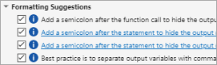

Code Analyzer Settings
Code Analyzer Settings
You can change how Code Analyzer messages appear in the Editor and Live Editor. With a few exceptions, these settings apply to messages in the Editor, Live Editor, MATLAB® Function Block Editor (if your products use that tool), and Code Analyzer Report.
On the Home tab, in the Environment section, click Settings. Select Code Analyzer, and then adjust setting options as described in the table below.
| Option | Usage |
|---|---|
| Enable continuous code checking | Specify whether you want to display Code Analyzer message indicators, such as the underlining of code and the message indicator bar, for documents open in the Editor. For more information, see Check Code for Errors and Warnings Using the Code Analyzer. |
| Underlining | Specify the type of coding issues that you want to have underlined. Regardless of the underlining menu option you choose, the Editor marks errors and warnings in the message indicator bar. |
| Autofix | Provides a link to a setting panel that enables you to adjust the color highlighting errors and warnings that MATLAB can autofix. You trigger autofix by clicking the Fix button in a Code Analyzer message. |
| Active Settings | Select the set of message settings to use. Click the down arrow to select or browse to a previously saved settings file. |
Actions button | Click to open a menu that enables you to select:
|
Search field | Searches the list of Code Analyzer messages that display below the search field. For details, see Search for Messages in the Code Analyzer Settings. |
Code Analyzer message settings  | Select or clear messages to enable or suppress their appearance in your Editor documents. To expand or collapse all categories in the list, right-click anywhere in the list and select Expand All or Collapse All. To suppress a message on a line-by-line or file-by-file basis, see Adjust Code Analyzer Message Indicators and Messages. |
Search for Messages in the Code Analyzer Settings
You can search the list of Code Analyzer messages in the Code Analyzer settings to display only those messages that are currently of interest to you. Use any combination of the methods that the following table presents.
| To See a List of Messages ... | Perform this action... | Example Scenario |
|---|---|---|
Containing specified text in the:
| Type the text in the search field. | You recall seeing a message containing some text that you want to review, but you cannot remember the exact message text. For example, type |
Corresponding to a given message ID | Type | You are reviewing the code that someone else wrote and you
want to see the message that corresponds to a suppressed one
using the Type Not all Code Analyzer messages have additional information. These messages do not appear as links. |
That you can specify using Code Analyzer settings | Click the down arrow to the right of the search field, and then click Show All. | You want to see the complete list of messages after you have searched the messages for some text or a given search menu option. |
Different from the default setting (of enabled or disabled) | Click the down arrow to the right of the search field, and then click Show Messages Modified from Default. A gray dot precedes a message with a setting different from the default. For example: | A coworker gave you a settings file and you want to review each message that the coworker changed from its default setting. |